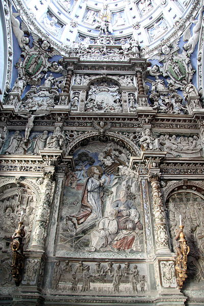

Ян Бяли
Ян Бяли — львівський скульптор останньої третини XVI ст. Працював у стилі Ренесансу з елементами північного маньєризму. Син Петра Бялого, ймовірно уродженець Кракова. У 1572—1574 роках був учнем Джованні Падовано у Кракові. У 1574—1572 навчався у Яна Михаловича з Ужендува. Працював у Кракові та Львові. Зберігся алебастровий вівтар із підписом «R. Jan Bialy R. S. 1594» в каплиці святого Йосипа латинського кафедрального собору у Львові.
Це свідчить, що принаймні частина вівтаря виконана цим скульптором. У вирішенні відчутний вплив надгробка краківського єпископа Анджея Зебжидовського роботи Яна Михаловича у вавельській катедрі. Ще один вівтар Бялого із цього ж собору знаходиться у костелі села Заріччя Підкарпатського воєводства. Низка робіт приписується із певною імовірністю. До таких відноситься вівтар-мавзолей святого Яцка Одровонжа у домініканському костелі Кракова, виконаний 1595 року. Мистецтвознавець Ян Кароль Зубжицький припускав авторство Бялого у маньєристичному вівтарі Шольц-Вольфовичів, датованому 1599 роком, який перебував спочатку у Латинській катедрі, а 1771 року перенесений до тринітарського костелу св. Миколая. Однак така атрибуція — лише одна з версій. У різний час вівтар приписували також Андреасові Бемеру (версія Збігнева Горнунга), тандему Шольц-Вольфовича зі ще одним невідомим скульптором (Мечислав Гембарович), колу Германа ван Гутте (Володимир Любченко), Янові Зарембі і ймовірно Шольц-Вольфовичу (Юрій Смірнов). На думку мистецтвознавців роботами Бялого скоріш за все було оздоблено незбережені донині готичні костели францисканців і домініканців у Львові.